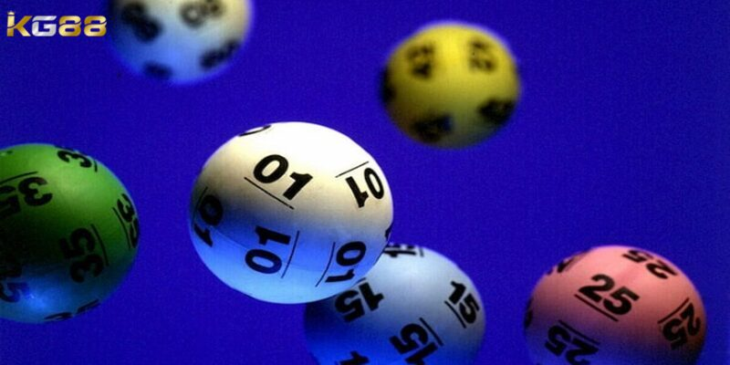
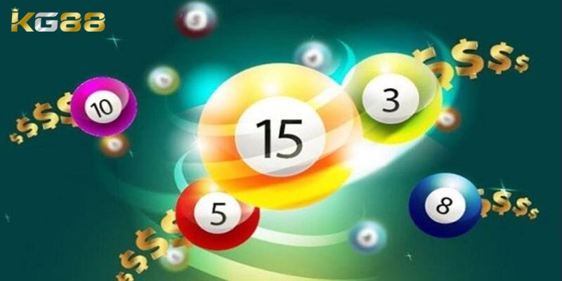
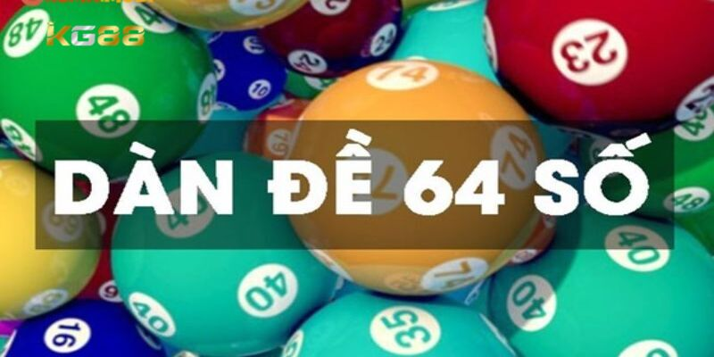
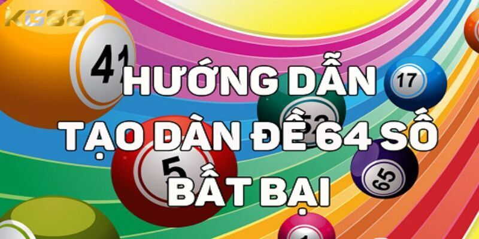

XỔ SỐ KG88
Hướng Dẫn Cách Nuôi Dàn Đề 64 Số Dành Cho Tân Binh Mới
POSTED ON THÁNG SÁU 27, 2024 BY ADMINKG88

Cách nuôi dàn đề 64 số được biết đến là một phương pháp đặt cược lô đề đã không còn quá xa lạ với nhiều anh em cược thủ Việt Nam. Trong bài viết này hãy cùng chuyên gia KG88 nhà cái khám khám phá chi tiết về cách nuôi dàn đề 64 số, cũng như phương pháp vào tiền rinh về chiến thắng lớn.
Tìm hiểu về dàn đề 64 số bao gồm những số nào?
Dàn đề 64 số là một thuật ngữ quen thuộc trong cộng đồng chơi lô đề, bao gồm 64 cặp số từ 00 đến 99 được chọn ra dựa trên các phương pháp soi cầu, nhằm tìm ra những cặp số có tỷ lệ trúng cao nhất. Đây là chiến thuật được nhiều người chơi lô đề sử dụng quanh năm.

Dưới đây là cách nuôi dàn đề 64 số phổ biến nhất, được tổng hợp từ kinh nghiệm của nhiều cao thủ trong nghề:
1, 5, 7, 8, 10, 11, 12, 13, 15, 18, 19, 31, 32, 33, 35, 37, 38, 39, 40, 41, 42, 43, 45, 47, 48, 49, 50, 51 và 52, 53, 55, 57, 59, 60, 61, 62, 63, 65, 67, 68, 69, 70, 71, 72, 73, 75 và 77, 78, 79, 80, 81, 82, 83, 84, 87, 89, 90, 91, 92, 93, 95, 97, 98, 99.
Hướng dẫn chi tiết từ a – z cách nuôi dàn đề 64 số
-
Bước 1 : Người chơi hãy theo dõi bảng kết quả xổ số của ngày
trước để làm sơ qua cho ngày tiếp theo.
- Bước 2: Tại bảng thống kê người chơi hãy lấy ra 8 số đầu và 8 số đuôi có tần suất xuất hiện cao.
Sau đó, người chơi hãy ghép các số đầu với các số đuôi để tạo thành dàn đặc biệt.
Ngoài việc sử dụng 8 số đầu, người chơi cũng có thể lựa chọn 8 số cuối.
Phương pháp nuôi dàn đề này cực kỳ hiệu quả và được kiểm chứng bởi người chơi và chuyên gia xổ số KG88 có nhiều kinh nghiệm.

Hướng dẫn chi tiết từ a – z cách nuôi dàn đề 64 số
Tổng hợp một số cách nuôi dàn đề 64 số dễ trúng nhất
Dưới đây là một số phương pháp giúp lô thủ nuôi dàn đề 64 số hiệu quả và dễ trúng nhất 2024:
Mẹo nuôi dàn đề 64 số dựa vào giải đặc biệt
Để tạo ra dàn đề 64 số bất bại một cách đơn giản và hiệu quả, bạn nên xem xét kỹ kết quả xổ số trước đó để tìm ra quy luật. Nếu bạn không có thời gian để thống kê giải đặc biệt trong thời gian dài, hãy dựa vào kết quả của những kỳ gần nhất. Ví dụ, nếu các số chẵn thường xuyên xuất hiện gần đây, bạn nên tạo dàn đề 64 dựa trên các số chẵn này. Cách làm này sẽ tăng cơ hội thắng của bạn.

Cách nuôi dàn đề 64 số dựa vào giải đặc biệt
Các con số trong dàn đề có được sắp xếp ngẫu nhiên hoặc theo một quy luật nhất định, tùy thuộc vào sự tính toán của mỗi người chơi. Quan trọng nhất là bạn cần phải áp dụng chiến thuật hợp lý và đưa ra tiền cược một cách có tính toán. Nếu như chưa chắc chắn thì nên bắt đầu với mức cược nhỏ để giảm thiểu rủi ro.
Cách nuôi dàn đề 64 số theo lô gan
Thay vì chỉ đánh 10 hoặc 20 số, việc tạo dàn đề 64 số sẽ tăng khả năng trúng thưởng của bạn. Với số lượng nhiều hơn, xác suất trúng cũng cao hơn, cho phép bạn đánh mạnh tay hơn một chút.
Cách nuôi dàn đề 64 số, bạn nên dựa vào kết quả gần đây và tập trung vào các con số lô gan, tức là những con số lâu không về trong 1-2 tháng. Sau khi thống kê, bạn có thể xây dựng một chiến lược chơi hợp lý. Các con số này có thể được sắp xếp theo bất kỳ nguyên tắc nào bạn thấy phù hợp, chẳng hạn như lẻ-chẵn hoặc chẵn-lẻ.
Ví dụ, nếu lô gan xuất hiện ở các con số 34 và 56, bạn có thể đánh lại hai con số này và kết hợp với các phương pháp đánh đầu đuôi hoặc lô rơi để chọn ra đủ 64 con số. Chọn những con số mà bạn cho rằng có khả năng về cao nhất và tập trung vào chúng. Một khi đã quyết định các con số, kiên định với lựa chọn của mình là điều quan trọng, vì sự nhất tâm sẽ ảnh hưởng lớn đến kết quả.
Sự kiên trì và tính toán kỹ lưỡng, cẩn thận chắc chắn sẽ giúp bạn tăng cơ hội thắng trong cách nuôi dàn đề 64 số trong lô đề. Hãy đảm bảo rằng lô thủ luôn theo dõi kết quả và điều chỉnh chiến lược sao cho hợp lý nhất để đạt hiệu quả cao nhất nh.
Xem thêm: Hướng Dẫn Cách Chơi Bạch Thủ Lô Hốt Bạc Cho Game Thủ
BÀI VIẾT MỚI